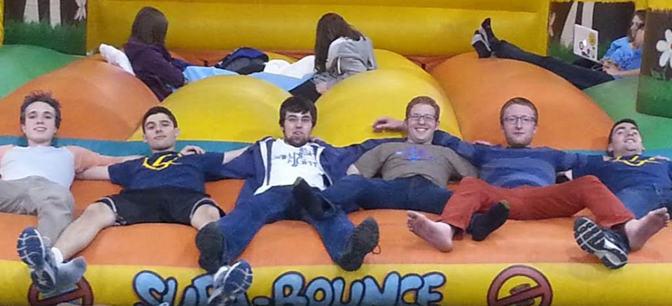

New Brother Spotlight – Vance Matthews
Vance is a rising sophomore from Northern California studying Cognitive and Brain Sciences. He joined ZBT to experience a unique and intellectually engaging community and brotherhood that will challenge him to be the best man he can be. In his free time, he enjoys playing the guitar, obsessing about Russia, and discussing abstract philosophical ideas.
A Powerhouse of Excellence
The Omicon Chapter of Zeta Beta Tau was founded in 1987 at Tufts University. In the small room of 102 Hill Hall, our first four founders met to plan out the future of the chapter. Since that point, ZBT Omicron has enjoyed over 25 years of great memories, philanthropic efforts and social events at Tufts University.
Since its founding, ZBT Omicron has seen success, a success that has continued over the past few years. We have fundraised tens of thousands of dollars for the Boston Children's Hospital, received national awards and accolades like Most Improved ZBT Chapter from ZBT Nationals, and maintained our commitment to being Tufts' only non-pledging fraternity.
We, the members of Zeta Beta Tau fraternity, believe that the development of the individual as a responsible, mature member of society is the primary goal of the university today. We believe that fraternity offers to the university community a unique, desirable and successful means of achieving this goal. In fulfilling the purposes of fraternity, we dedicate ourselves to the principles of Intellectual Awareness, Social Responsibility, Integrity, and Brotherly Love.
Download Our Latest Newsletter
Get On The Ball
Get On The Ball is ZBT Omicron's weeklong fundraiser for the Boston Children's Hospital. During the week, we raise money and awareness for the Hospital, rolling a 6x6 ball around campus. We get the entire Tufts and Medford/Somerville community involved, taking all contributions from monetary donations to just signing the ball.
Last year, in 2013 we raised $5500 during our weeklong fundraiser, cosponsoring with countless businesses (JP Licks, Kickass Cupcakes) and working with several on-campus groups (Alpha Omicron Pi, Spirit of Color, sQ!, Amalgamates, Jackson Jills, BEATs, S-Factor and more).
Be The Match
In April 2014, ZBT Omicron brought Be The Match to Tufts University. In cosponsorship with the Tufts Association of Southeast Asians and the Tufts Psychology Department, ZBT helped enter over fifty members of the Tufts community into the bone marrow registry. Those who entered the registry potentially helped the lives of many.
Bringing Be the Match to the Tufts Campus was a part of Tufts Gives Back, the one day of the year dedicated to giving back to the community. Tufts Gives Back was created by ZBT, and 2014 was its inaugural year.
Relay for Life
Every year, brothers of ZBT Omicron participate in Relay for Life – an up-all-night fight against cancer, and a fundraiser for cancer research. In 2013, we fundraised the most for any fraternity, and we received the bronze medal of honor in recognition for our efforts. In 2014, we placed second in the inter-Greek fundraising competition.
Check back soon for more information about how to donate to and join our Spring 2015 Relay for Life team.
More Than Words
In April 2014, ZBT Omicron partnered with More Than Words. More Than Words is bookstore that employs people from disadvantaged backgrounds and gives them interview training so that they can find jobs elsewhere. Over the course of a few days, we sold and collected books for More Than Words, donating all profits and books made to them.
Bringing More Than Words to the Tufts Campus was a part of Tufts Gives Back, the one day of the year dedicated to giving back to the community. Tufts Gives Back was created by ZBT, and 2014 was its inaugural year.
Community Servings
Brothers of ZBT Omicron volunteer at Community Servings several times a semester. Going in groups of 6-10, we spend our Friday afternoon packaging food for those battling AIDS, in addition to their dependents and caretakers. If you're ever interested in working a shift with us, reach out to brother Joseph Cirone
Through the help of us and the hundreds of other volunteers, Community Servings is able to deliver 9,250 lunches adn dinners each week to homes of almost 875 individuals and families that are homebound due to acute life-threatening illness.

Big Brothers, Big Sisters
Big Brothers, Big Sisters is dedicated to helping children realize their potential and build their futures. With one of our core tenets being Intellectual Awareness, us ZBT brothers are, too.
ZBT Omicron began its partnership with Big Brothers Big Sisters' Boston Chapter in the end of 2013. Since that point, several of our brothers have become bigs for students in local Boston-area school districts. Those brothers are committed to making a difference and strengthening the local children and community.
Committed to Social Responsibility
Spring Rush 2016
Are you a freshman or sophomore? Are you interested in Greek life?
Look no further than Zeta Beta Tau, Omicron Chapter.
We will be developing our Spring Rush schedule at the start of the Spring 2016 semester. Keep posted for updates, event listings, and a timeline of events. As usual, expect nothing less than a fun time both getting to know your potential brothers and learning more about our house culture.
For more information or if you have any questions, please contact Ryan Hastings-Echo or Benjamin Pall.
Brothers
- Leadership
- Beta Zeta
- Beta Theta
- Beta Iota
- Beta Kappa
- Beta Lambda